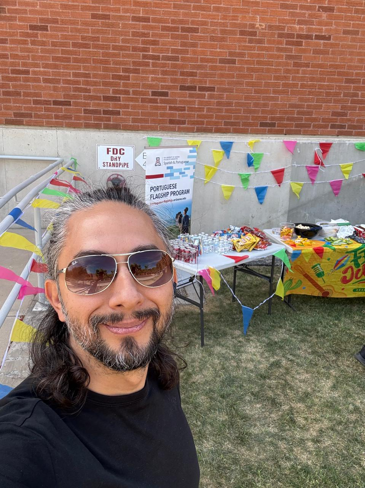
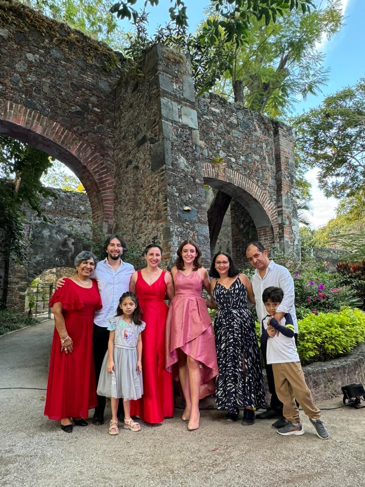
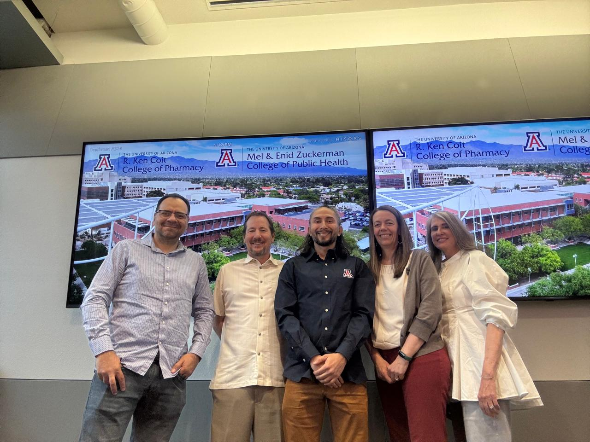
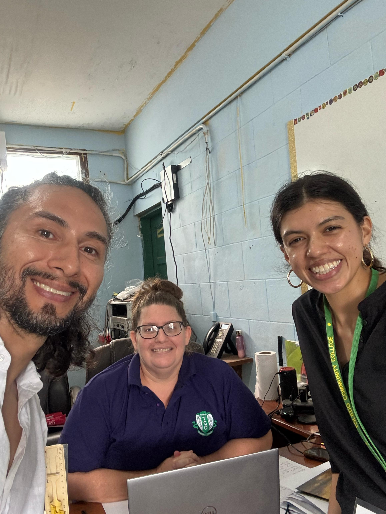
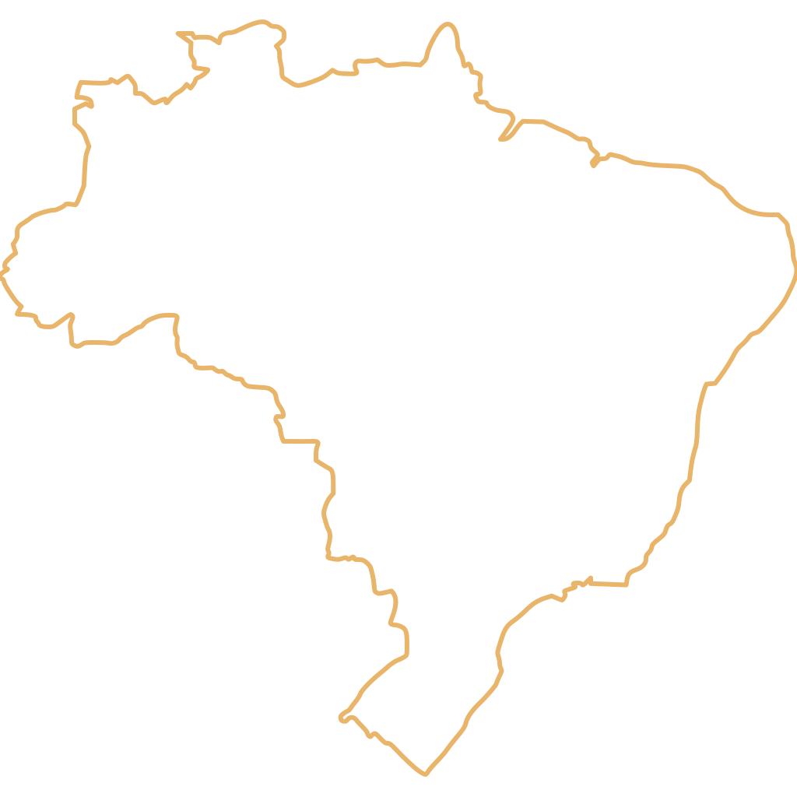

Espanhol
Memória
A língua da família, da infância e do afeto. É a língua que me faz voltar para casa.

Minha biografia não é sobre falar perfeito.
É sobre como cada língua me ajuda a lembrar, estudar, cuidar e pertencer.
Cada língua na minha vida tem uma função diferente. Cada uma abre uma porta.
A língua da família, da infância e do afeto. É a língua que me faz voltar para casa.
A língua do doutorado, da pesquisa em saúde pública e da colaboração internacional.
A língua do Brasil, da curiosidade e de um novo caminho de pesquisa em One Health.
Eu sou do México. O espanhol é a primeira língua da minha vida.
É a língua da minha família. É a língua da minha infância. Em espanhol eu aprendi a pedir comida, a contar histórias e a dizer "eu te amo".
Quando eu penso em casa, eu penso em espanhol. O espanhol é a língua do afeto. É a língua da memória.

Hoje eu moro em Tucson. Eu sou estudante de doutorado em saúde pública na Universidade do Arizona.
Eu pesquiso saúde de adolescentes, violência no namoro, uso de substâncias e prevenção. Eu leio, escrevo e analiso dados em inglês.
O inglês não é só a língua da escola. É a língua do trabalho, da disciplina e das oportunidades.

Eu também trabalho com pessoas em Belize. Belize é um país pequeno, mas muito diverso em línguas e culturas. Ali convivem inglês, espanhol, kriol e línguas maias.
Eu colaboro com organizações que trabalham com jovens e saúde. Em Belize eu aprendo uma lição importante: a pesquisa precisa escutar as comunidades, não só falar sobre elas.
Uma vez, eu estava flutuando em um rio em Belize. De repente, eu vi uma anta passando. A natureza também me ensina sobre a língua.

Agora eu estudo português. O português é novo para mim. Para mim, o português é uma nova porta.
Eu tenho um sonho: fazer pesquisa no Brasil. O Brasil tem pesquisadores incríveis em saúde pública e em meio ambiente.
Eu ainda estou aprendendo. Mas já escrevo frases, já leio pequenos textos, e já me sinto mais perto do Brasil.

No verão passado, eu visitei o Pantanal. Eu vi onças-pintadas pela primeira vez na minha vida. Foi um momento muito especial.
Ali eu entendi uma ideia chamada One Health, ou Saúde Única. Esta ideia ensina que a saúde das pessoas, dos animais e do ambiente está conectada.
Esta é a minha próxima direção de pesquisa. E por isso eu quero falar português.

Este vídeo é um exemplo do meu trabalho de pesquisa. Ele conecta saúde pública, dor social e uso de substâncias. Para mim, pesquisa e língua caminham juntas.
Eu carrego o espanhol como memória,
o inglês como trabalho,
e o português como uma nova porta para imaginar futuros mais justos na América Latina.
As línguas não são só gramática. As línguas são lugares, memórias, trabalho, relações e formas de cuidar das pessoas.
Muito obrigado.